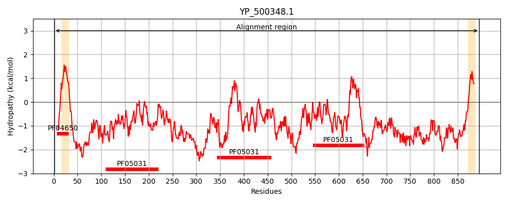
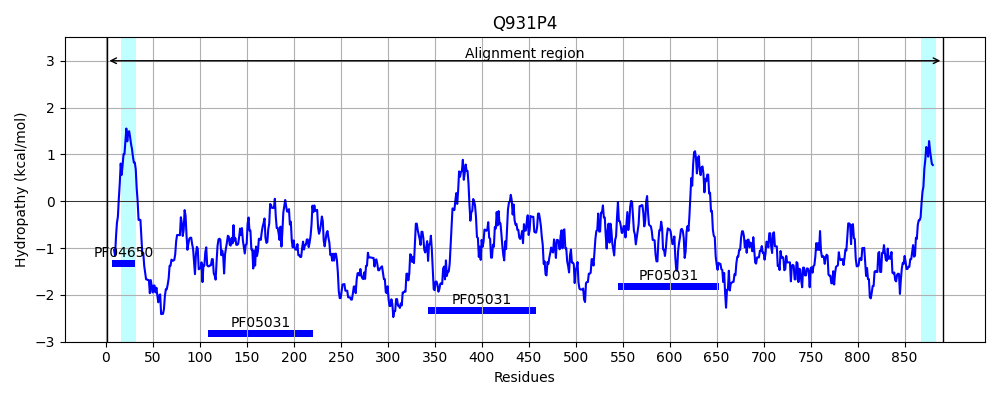
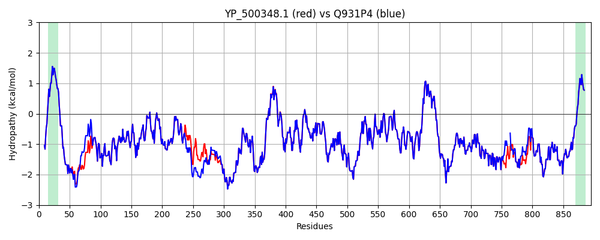

Hit Accession: Q931P4
Hit TCID: 9.A.39.1.2
Hit Description: gnl|BL_ORD_ID|17261 gnl|TC-DB|Q931P4|9.A.39.1.2 Iron-regulated surface determinant protein H - Staphylococcus aureus (strain Mu50 / ATCC 700699).
Mach Len: 895
e:0.000000
Query TMS Count : 2
Hit TMS Count: 2
TMS-Overlap Score: 1.500000
Predicted Substrates:CHEBI:5651;ferroheme b
BLAST Alignment:
Score: 4574 , Bit scores: 1766 bits, E-value: 0.0e+00, Alignment length: 895, Percentage identity: 98
Query: 1 MNKHHPKLRSFYSIRKSTLGVASVIVSTLFLITSQHQAQAAENTNTSDKISENQNNNATTTQPPKDTNQTQPATQPANTAKNYPAADESLKDAIKDPALENKEHDIGPREQVNFQLLDKNNETQYYHFFSIKDPADVYYTKKKAEVELDINTASTWKKFEVYENNQKLPVRLVSYSPVPEDHAYIRFPVSDGTQELKIVSSTQIDDGEETNYDYTKLVFAKPIYNDPSLVKSDTNDAVVTNDQSSSVASNQTNTNTSNQNISTINNANNQPQATTNMSQPAQPKSSTNADQASSQPAHETNSNGNTNDKTNESSNQSDVNQQYPPADESLQDAIKNPAIIDKEHTADNWRPIDFQMKNDKGERQFYHYASTVEPATVIFTKTGPIIELGLKTASTWKKFEVYEGDKKLPVELVSYDSDKDYAYIRFPVSNGTREVKIVSSIEYGENIHEDYDYTLMVFAQPITNNPDDYVDEETYNLQKLLAPYHKAKTLERQVYELEKLQEKLPEKYKAEYKKKLDQTRVELADQVKSAVTEFENVTPTNDQLTDLQEAHFVVFESEENSESVMDGFVEHPFYTATLNGQKYVVMKTKDDSYWKDLIVEGKRVTTVSKDPKNNSRTLIFPYIPDKAVYNAIVKVVVANIGYEGQYHVRIINQDINTKDDDTSQNNTSEPLNVQTGQEGKVADTDVAENSSTATNPKDASDKADVIEPESDVVKDADNNIDKDVQHDVDHLSDMSDNNHFDKYDLKEMDTQIAKDTDRNVDKDADNSVGMSSNVDTDKDSNKNKDKVIQLNHIADKNNHTGKAAKLDVVKQNYNNTDKVTDKKTTEHLPSDIHKTVDKTVKTKEKAGTPSKENKLSQSKMLPKTGETTSSQSWWGLYALLGMLALFIPKFRKESK 895
MNKHHPKLRSFYSIRKSTLGVASVIVSTLFLITSQHQAQAAENTNTSDKISENQNNNATTTQ PKDTNQTQPATQP TAKNYPAADESLKDAIKDPALENKEHDIGPREQVNFQLLDKNNETQYYHFFSIKDPADVYYTKKKAEVELDINTASTWKKFEVYENNQKLPVRLVSYSPVPEDHAYIRFPVSDGTQELKIVSSTQIDDGEETNYDYTKLVFAKPIYNDPSLVKSDTNDAVVTNDQSSS ASNQTNTNTSNQN ST NNANNQPQATTNMSQPAQPKSS NADQASSQPAHETNSNGNTNDKTNESSNQSDVNQQYPPADESLQDAIKNPAIIDKEHTADNWRPIDFQMKNDKGERQFYHYASTVEPATVIFTKTGP+IELGLKTASTWKKFEVYEGDKKLPVELVSYDSDKDYAYIRFPVSNGTR+VKIVSSIEYGENIHEDYDYTLMVFAQPITNNPDDYVDEETYNLQKLLAPYHKAKTLERQVYELEKLQEKLPEKYKAEYKKKLDQTRVELADQVKSAVTEFENVTPTNDQLTDLQEAHFVVFESEENSESVMDGFVEHPFYTATLNGQKYVVMKTKDDSYWKDLIVEGKRVTTVSKDPKNNSRTLIFPYIPDKAVYNAIVKVVVANIGYEGQYHVRIINQDINTKDDDTSQNNTSEPLNVQTGQEGKVADTDVAENSSTATNPKDASDKADVIEPESDVVKDADNNIDKDVQHDVDHLSDMSDNNHFDKYDLKEMDTQIAKDTDRNV DNSVGMSSNVDTDKDSNKNKDKVIQL HIADKNNHTGKAAKLDVVKQNYNNTDKVTDKKTTEHLPSDIHKTVDKTVKTKEKAGTPSKENKLSQSKMLPKTGETTSSQSWWGLYALLGMLALFIPKFRKESK
Sbjct: 1 MNKHHPKLRSFYSIRKSTLGVASVIVSTLFLITSQHQAQAAENTNTSDKISENQNNNATTTQQPKDTNQTQPATQPVITAKNYPAADESLKDAIKDPALENKEHDIGPREQVNFQLLDKNNETQYYHFFSIKDPADVYYTKKKAEVELDINTASTWKKFEVYENNQKLPVRLVSYSPVPEDHAYIRFPVSDGTQELKIVSSTQIDDGEETNYDYTKLVFAKPIYNDPSLVKSDTNDAVVTNDQSSSDASNQTNTNTSNQNTSTTNNANNQPQATTNMSQPAQPKSSANADQASSQPAHETNSNGNTNDKTNESSNQSDVNQQYPPADESLQDAIKNPAIIDKEHTADNWRPIDFQMKNDKGERQFYHYASTVEPATVIFTKTGPVIELGLKTASTWKKFEVYEGDKKLPVELVSYDSDKDYAYIRFPVSNGTRDVKIVSSIEYGENIHEDYDYTLMVFAQPITNNPDDYVDEETYNLQKLLAPYHKAKTLERQVYELEKLQEKLPEKYKAEYKKKLDQTRVELADQVKSAVTEFENVTPTNDQLTDLQEAHFVVFESEENSESVMDGFVEHPFYTATLNGQKYVVMKTKDDSYWKDLIVEGKRVTTVSKDPKNNSRTLIFPYIPDKAVYNAIVKVVVANIGYEGQYHVRIINQDINTKDDDTSQNNTSEPLNVQTGQEGKVADTDVAENSSTATNPKDASDKADVIEPESDVVKDADNNIDKDVQHDVDHLSDMSDNNHFDKYDLKEMDTQIAKDTDRNV----DNSVGMSSNVDTDKDSNKNKDKVIQLAHIADKNNHTGKAAKLDVVKQNYNNTDKVTDKKTTEHLPSDIHKTVDKTVKTKEKAGTPSKENKLSQSKMLPKTGETTSSQSWWGLYALLGMLALFIPKFRKESK 891 | Protein Hydropathy Plots: |
|---|
|  |  |
Pairwise Alignment-Hydropathy Plot:
|
|---|
|  |